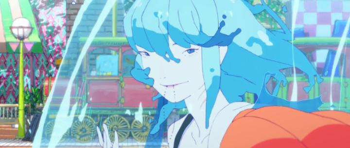

I was looking forward to the anime film "ChaO" only because it came from Studio 4C. But on the premise? After "Ponyo," "Lu Over the Wall," and even "Ride Your Wave" or 4C's own "Children of the Sea" and "Fortune Favors Lady Nikuko"... did we really need yet another anime based on "The Little Mermaid," or at least with such a strong sea-based setting? Yeah, having so much direct competition ain't helping its case, but "ChaO" was so charming that I can't stay mad at it.The movie is outrageously wacky and wears that on its sleeve, recalling the visual style of "Mind Game" and "Tekkonkinkreet," but with most of the more serious and depressing themes removed. Starting in the near future, it shows the human race and mermaid race in a peaceful coexistance, with city infrastructure completely transformed to support both air- and water-breathing creatures. This was made possible because of a human's love for a mermaid resulting in their marriage, a story so amazing it's become a children's fairy tale. A young news reporter comes across who he believes in the human from that story, Stefan, who quietly lives alone on a boat. Stefan reluctantly tells his side of the story: he was a struggling young engineer for a boat company when out of nowhere, a large orange fish eats him - he wakes up in a hospital with that fish, who he nicknames ChaO, confessing her love for him. ChaO happens to be the princesses of the Mermaid King, and this first-ever cross-species marriage would bring peace to both, and be a massive benefit to Stefan's boat company. Everyone is excited about the marriage, especially Stefan's boss. Everyone except Stefan himself of course... aside from being roped into what felt like an arranged marriage against his will... SHE'S A FISH! But there are benefits to the arrangement: Stefan gets promoted in his company, allowing him to finally design his safer air-propulsion system for boats, preventing injury to fish (or other life in the water... his backstory reveals more to this later). And ChaO does have a more beautiful, albiet still alien, appearance when in water, and this appears on land whenever she feels "safe" - if Stefan can warm up more to the relationship, it might become more common. Meanwhile, ChaO being the sweet soul she is, gives up her life in water to live on land, and being literally a fish out of water, has a lot to learn about the human world (she blows up Stefan's house by accident at one point). The development of Stefan's journey during the story is the focus; he's undeniably the main character. His relationship with ChaO, including all its ups and downs, is core to the story. That's all effective, but also predictable, and doesn't have the depth of some of the other films I listed at the start. For me, I had so much fun primarily because of ChaO as a character. In anime lingo, "CHAO IS BEST GIRL," regardless of how she looks. Even as a fish, her unflinching love and earnest attempt to be a good wife, delivered with a great vocal performance in the Japanese dub, is heart-meltingly cute. When she cries, it's heartbreaking. The wildly eccentric character designs and style help sell that: ChaO might not seem as cute on a poster, but paired with animation and voice, I quickly changed my mind. It's that, plus the wacky side characters of all shapes and sizes, that sell the movie. I feel like I'm going on about how the garnish transformed the main course into a much better meal.  Visually, "ChaO" is a colourful trip, with some human characters that look like giant round eggs, or short midgets on the sidewalk in sumo-wrestling attire. In short, it doesn't take itself too seriously. It's like walking into a colourful candy store filled with crystalized sugar. Music, aside from a boppy pop number in the credits, serves its purpose to the movie's tone. None of this is the best I've seen from Studio 4C, but continues their recent trend of making movies that are just fun. I was going to say the movie as a whole is accessible, but the art style might scare some people away... perhaps more adventurous anime fans will be willing to give the movie a chance, and will have a fun time in return.And from that perspective, I can't find much fault in "ChaO" for being a sweet and fun romantic-comedy-adventure. Even if the water isn't as deep as its other contemporaries, this is still a great and memorable time at the splash park.
- "Ani" More reviews can be found at : https://2danicritic.github.io/ Previous review: review_Chainsaw_Man_-_The_Movie_-_Reze_Arc Next review: review_Charlotte